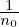
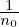
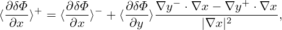

Poisson’s equation is written as
|
| (161) |
where −ùúÄ0∇2δΦ is called the space-charge term. Since we consider modes with k‚à•‚â™ k⊥, the space-charge term is approximated as ∇2δΦ ≡∇⊥2δΦ + ∇‚à•2δΦ ≈∇⊥2δΦ. Then Eq. (161) is written as
 | (162) |
This approximation eliminates the parallel plasma oscillation from the system. The perpendicular plasma oscillations seem to be partially eliminated in system with gyrokinetic ions and drift-kinetic electrons. There are the so-called ΩH modes that appear in the gyrokinetic system which have some similarity with the plasma oscillations but with a much smaller frequency ΩH ∼ (k‚à•‚àïk⊥)(λD‚àïρs)ωpe. (electrostatic shear Alfven wave)
Using expression (146), the perturbed ion density δni is written as
where the last term (in blue) is approximately zero for isotropic F0 and this term is usually dropped in simulations that assume isotropic F0 and approximate δA as δA∥e∥. The second term (in red) in expression (163) is the so-called the polarization density np, i.e.,|
| (164) |
which has an explicit dependence on δΦ and is usually moved to the left hand of Poisson’s equation when constructing the numerical solver of the Poisson equation, i.e., equation (162) is written as
 | (165) |
where δni′ = δni − δnpi = ∫ δhidv, which is evaluated by using Monte-Carlo markers. Since some parts depending on δΦ are moved from the right-hand side to the left-hand side of the Ô¨Åeld equation, numerical solvers (for δΦ) based on the left-hand side of Eq. (165) probably behaves better than the one that is based on the left-hand side of Eq. (162), i.e., −ùúÄ0∇⊥2δΦ.
 
The polarization density is part of the perturbed density that is extracted from the right-hand side and moved to the left-hand side. The polarization density will be evaluated analytically, which is independent of Monte-Carlo markers, whereas the remained density on the right-hand side will be evaluated using Mote-Carlo markers. The two diÔ¨Äerent methods of evaluating the two diÔ¨Äerent parts of the total perturbed density can possibly introduce signiÔ¨Åcant systematic errors especially if the two terms are expected to cancel each other and give a small quantity that is much smaller than either of the two terms. This is one pitfall for PIC simulations that extract some parts from the source term and move them to the left-hand side. To remedy this, we can introduce an additional term on the right-hand that gives the diÔ¨Äerence between the polarization density evaluated by the two methods. This is often called the cancellation scheme. It turns out the cancellation scheme is not necessary for Eq. (165), but for the Ô¨Åeld solver for Ampere’s equation (discussed later), this cancellation scheme is necessary in order to obtain stable results.
Next, let us perform the gyro-averaging and velocity integration in expression(164). Since δΦ is independent of velocity coordinates, the Ô¨Årst term (adiabatic term) in expression (164) is trivial and the velocity integration can be readily performed (assume F0 is Maxwellian), giving
Next, we try to perform the gyro-averaging and the velocity integration of the second term in expression (164). In order to perform the gyro-averaging, we expand δΦ in wave-number space as
 | (167) |
and we need to express x in terms of the guiding center variables (X,v) since the gyro-averaging is taken by holding X rather than x constant. The guiding-center transformation gives
 | (168) |
Using this, the gyro-average of δΦ is written as
When doing the gyro-averaging, X is hold constant and thus e∥(X) is also constant. Then it is straightforward to deÔ¨Åne the gyro-angle α. Let k⊥ deÔ¨Åne one of the perpendicular direction 1, i.e.,
k⊥ = k⊥1. Then another perpendicular basis vector is deÔ¨Åned by
1, i.e.,
k⊥ = k⊥1. Then another perpendicular basis vector is deÔ¨Åned by  2 = e‚à•√ó
2 = e‚à•√ó 1. Then v⊥ is written as
v⊥ = v⊥(
1. Then v⊥ is written as
v⊥ = v⊥( 1 cosα +
1 cosα +  2 sinα), which deÔ¨Ånes the gyro-angle α. Then the expression in Eq. (169) is written
as Then the gyro-averaging in expression (169) is written as
2 sinα), which deÔ¨Ånes the gyro-angle α. Then the expression in Eq. (169) is written
as Then the gyro-averaging in expression (169) is written as 
|
| (172) |
Next, we need to perform the integration in velocity space, which is done by holding x rather than X
constant. Therefore, it is convenient to transform back to particle coordinates. Using X = x + v × ,
expression (172) is written as
,
expression (172) is written as
 | (173) |
Then the velocity integration is written as
Similar to Eq. (170), except for now at x rather than X, ik ⋅ v × is written as|
| (175) |
Since this is at x rather than X, k⊥, v⊥, and Ω are diÔ¨Äerent from those appearing in expression (170). However, since this diÔ¨Äerence is due to the variation of the equilibrium quantity e‚à•‚àïΩ in a Larmor radius, and thus is small and is ignored in the following.
Plugging expression (175) into expression (174) and using dv = v⊥dv⊥dv∥dα, we obtain
 | (176) |
Note that ∂F0‚àï∂ùúÄ is independent of the gyro-angle α in terms of guiding-center variables. When
transformed back to particle coordinates, X contained in ∂F0‚àï∂ùúÄ will introduce α dependence via
X = x + v × . This dependence on α is weak since the equilibrium quantities can be considered constant
over a Larmor radius distance evaluated at the thermal velocity. Therefore this dependence can be ignored
when performing the integration over α, i.e., in terms of particle coordinates, ∂F0‚àï∂ùúÄ is approximately
independent of the gyro-angle α. Then the integration over α in Eq. (176) can be performed, yielding
. This dependence on α is weak since the equilibrium quantities can be considered constant
over a Larmor radius distance evaluated at the thermal velocity. Therefore this dependence can be ignored
when performing the integration over α, i.e., in terms of particle coordinates, ∂F0‚àï∂ùúÄ is approximately
independent of the gyro-angle α. Then the integration over α in Eq. (176) can be performed, yielding
In order to perform the remaining velocity integration in expression (177), we assume that F0 is a Maxwellian distribution given by
|
| (178) |
where vt =  , then
, then
 | (179) |
Again we will ignore the weak dependence of n0(X) and T0(X) on v introduced by X = x + v × e‚à•‚àïΩ when transformed back to particle coordinates (for suÔ¨Éciently large velocity, the corresponding Larmor radius will be large enough to make the equilibrium undergo substantial variation. Since the velocity integration limit is to inÔ¨Ånite, this will deÔ¨Ånitely occur. However, F0 is exponentially decreasing with velocity, making those particles with velocity much larger than the thermal velocity negligibly few and thus can be neglected).
Plugging (179) into expression (177), we obtain

 | (181) |
the integration over v∥ can be performed, yielding
Using (I verified this by using Sympy)
 | (183) |
where I0(a) is the zeroth modified Bessel function of the first kind, expression (182) is written
|
| (184) |
where b = k⊥2vt2‚àïΩ2. Then the corresponding polarization density is written as
|
| (185) |
In Fourier space, the adiabatic term in expression (166) is written as
 | (186) |
Plugging expression (184) and (186) into expression (164), the polarization density np is finally written as
where
 | (189) |
Expression (188) agrees with the result given in Yang Chen’s notes.
Γ0 deÔ¨Åned in Eq. (189) can be approximated by the Pade approximation as
 | (190) |
The comparison between the exact value of Γ0 and the above Pade approximation is shown in Fig. 3.

Using the Pade approximation (190), the polarization density np in expression (188) can be written as
In the long wavelength limit, k⊥ρ ≪ 1, expression (191) can be further approximated as
Then the corresponding term in the Poisson equation is written as where λD is the Debye length deÔ¨Åned by λD2 = TùúÄ0∕(n0q2). For typical tokamak plasmas, the thermal ion gyroradius ρi is much larger than λD. This indicates that the term in expression (193) for ions is much larger than the space charge term ∇2δΦ ≡∇⊥2δΦ + ∇‚à•2δΦ ≈∇⊥2δΦ in the Poisson equation. Therefore the space charge term can be neglected for ion-scale modes, indicating that gyrokinetic plasmas are intrinsically charge-neutral on the ion-scale. In other words, the ion polarization shielding is dominant compared with the Debye shielding for ion-scale low-frequency micro-instabilities. For electron-scale modes, since ρe ≈ λD, the space charge term is comparable to the polarization density and should be included.
The polarization density expression (192) is for the long wavelength limit, which partially neglects FLR effect. Let us go back to the more general expression (191). In the wave-number space, the Poisson equation is written
 | (194) |
Write δni = npi + δni′, where δnpi is the ion polarization density, then the above expression is written
 | (195) |
The Fourier transforming in space, the above equation is written
 | (196) |
where  pi is the Fourier transformation (in space) of the polarization density npi and similar meanings for
δ
pi is the Fourier transformation (in space) of the polarization density npi and similar meanings for
δ , δ
, δ i′, and δ
i′, and δ e. Expression (191) implies that
e. Expression (191) implies that  pi is given by
pi is given by
 | (197) |
Using this, equation (196) is written
 | (198) |
Multiplying both sides by (1 + k⊥2ρi2)‚àïùúÄ0, the above equation is written
 | (199) |
Next, transforming the above equation back to the real space, we obtain
 | (200) |
Neglecting the Debye shielding term, the above equation is written
 | (201) |
which is the equation actually solved in many gyrokinetic codes, where λDi2 = ùúÄ0Ti∕(qi2ni0).
![∫
δni = δF dv
∫ ∫ [ ] ∫ [ ]
= δhdv + q-(δΦ− ‚ü®δΦ‚ü©α)∂F0- dv + q-⟨v⋅δA ‚ü©α ∂F0- dv, (163)
m ∂ùúÄ m ∂ùúÄ](nonlinear_gyrokinetic_equation172x.png)


![∫ ∂F ∫ ∫ ∫ ( k v )[∫ 2π ( k v ) ] ∂F dk
‚ü®δΦ ‚ü©α --0dv = δΦkexp(ik⋅x) J0 -⊥-⊥- exp i-⊥-⊥-sinα dα ---0v⊥dv⊥dv∥----3
∂ùúÄ ∫ [∫ ∫ ( Ω ) 0 ( Ω) ]∂ùúÄ (2π)
= δΦkexp(ik⋅x) J0 k⊥v⊥- 2πJ0 k⊥v⊥- ∂F0v⊥dv⊥dv∥ -dk-, (177)
Ω Ω ∂ùúÄ (2π )3](nonlinear_gyrokinetic_equation195x.png)

![∫
np = − qn0 δΦkexp(ik⋅x)[1− exp(− b)I0(b)]-dk--. (187)
T ∫ (2π)3
qn0 -dk--
= − T δΦkexp(ik⋅x)[1− Γ 0](2π)3, (188)](nonlinear_gyrokinetic_equation206x.png)